Making plots with gp
making-plots-with-gp.RmdIntroduction
It’s often useful to be able to plot a microwell plate, either to describe an experiment you performed in a visual manner, or to write documentation for a protocol. gp allows you to plot a surprisingly diverse set of layouts with fairly simple syntax. Additionally, this same process of plotting data is used to wrangle data (see the vignette ‘Using gp to wrangle plate data’). This vignette will teach you how to plot plates.
The gp
The most basic element in gp is the gp: It’s the plate itself. For instance, a 6 well plate can be created like this:
six_well <- gp(rows = 2, cols = 3)From here on, I’m going to omit the argument names for rows and columns, like this:
six_well <- gp(2, 3)Note that if your plate is in a standard format, you can also just specify the number of wells it has:
six_well <- gp(wells = 6)This only works for standard plate layouts - listed here:
plate_formats |>
knitr::kable()| wells | rows | cols |
|---|---|---|
| 1 | 1 | 1 |
| 6 | 2 | 3 |
| 12 | 3 | 4 |
| 24 | 4 | 6 |
| 48 | 6 | 8 |
| 96 | 8 | 12 |
| 384 | 16 | 24 |
| 1536 | 32 | 48 |
| 3456 | 48 | 72 |
Note also that if you specify wells = 96 and what you MEAN is a 4x24 well plate, you’re going to be dissapointed. For that reason, it’s usually best to be explicit about the plate dimensions.
Plotting
If often helps to plot your gp as you build it up, section by section (more on sections later). This is very simple:
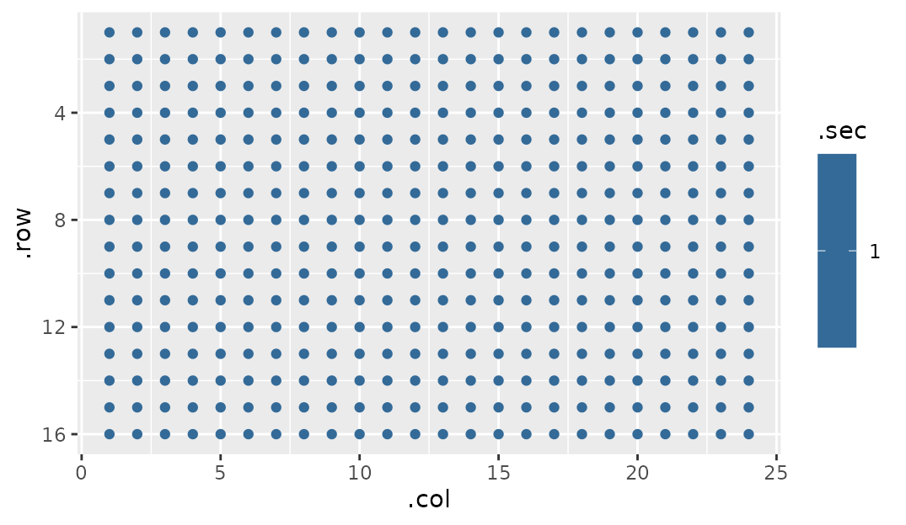
gp_plot takes two arguments: 1. A gp object 2. A name of a column in gp$well_data that you would like to use as a color overlay on the plot
Let’s dig into point two for a second.
gp have a list item buried within them called well_data:
my_plate$well_data |> head()
#> # A tibble: 6 × 10
#> .row .col .sec_par .sec .row_sec_par .row_sec .col_sec_par .col_sec
#> <int> <int> <int> <int> <int> <int> <int> <int>
#> 1 1 1 1 1 1 1 1 1
#> 2 1 2 1 1 1 1 2 2
#> 3 1 3 1 1 1 1 3 3
#> 4 1 4 1 1 1 1 4 4
#> 5 1 5 1 1 1 1 5 5
#> 6 1 6 1 1 1 1 6 6
#> # … with 2 more variables: .col_is_margin <lgl>, .row_is_margin <lgl>This seems like a lot to take in, but it’s really just the data that gp_plot is plotting. The second argument we provide can be any one of these columns, and we will provide additional columns when we start making sections (that’s coming up soon, I promise!). (Note: if you want more information about these columns, go to ?gp)
For instance, we can plot the row number:
gp_plot(my_plate, .row)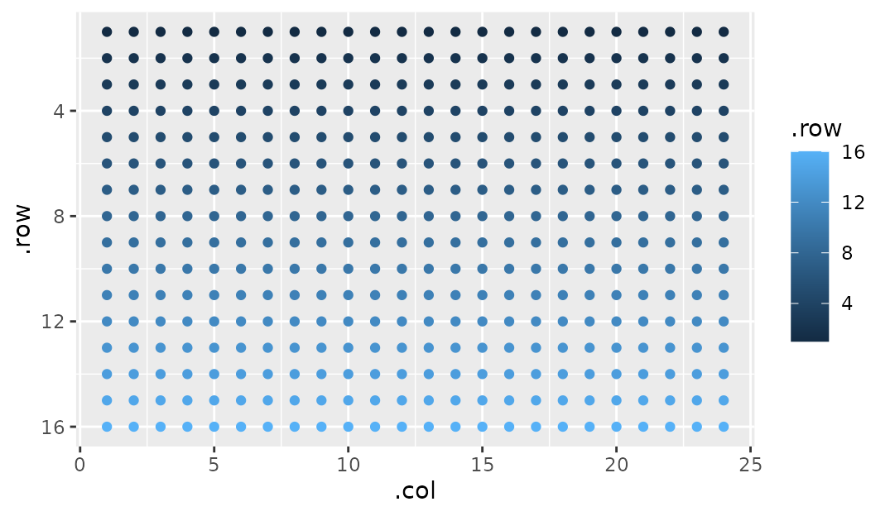
At this point you should also note that the axes are arranged like most plates are - top left is 1, 1.
Adding sections to plates
This package would be useless if there wasn’t the ability to add patterns to your plates. gp uses the idea of ‘sections’ that can build ontop of one another. We’ll make it more concrete with examples, but in short a plate is the biggest section, and sections can have sections. But what can sections DO for us?
Simply put, sections let us make rectangular patterns on plates:
my_plate |> gp_sec("condition", nrow = 16, ncol = 3) |>
gp_plot(as.factor(condition)) # To make sections a bit more visible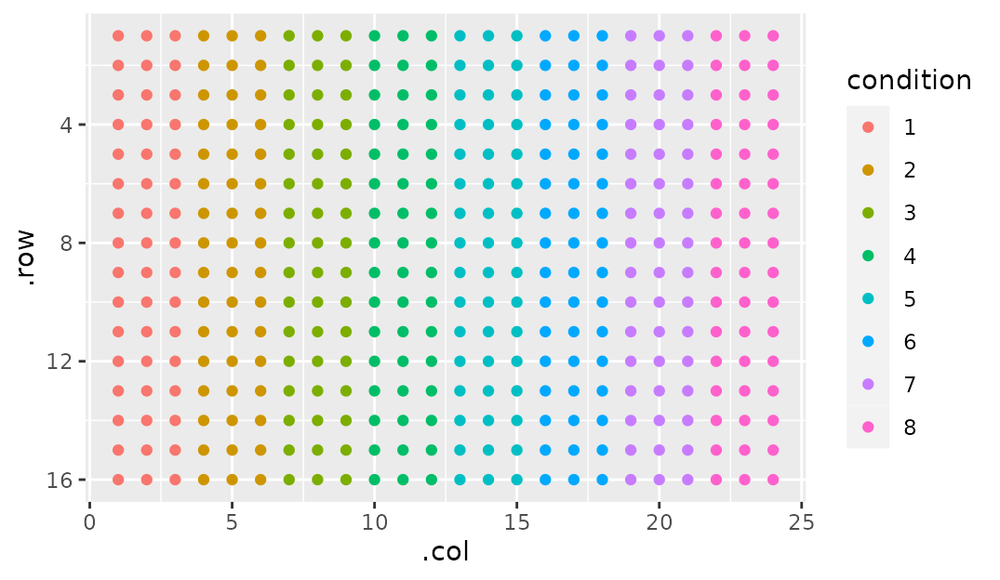
gp_sec is the workhorse of gp. Before we get in to all the other fun stuff it can do, let’s go over syntax. gp_sec takes several arguments:
- A name. This is so you can refer to it later (as I did in
gp_plotin the example above) - Dimensions.
By default, if a dimension is left blank it tries to fill up the maximum of its parent section (here the whole plate). So I could have done this:
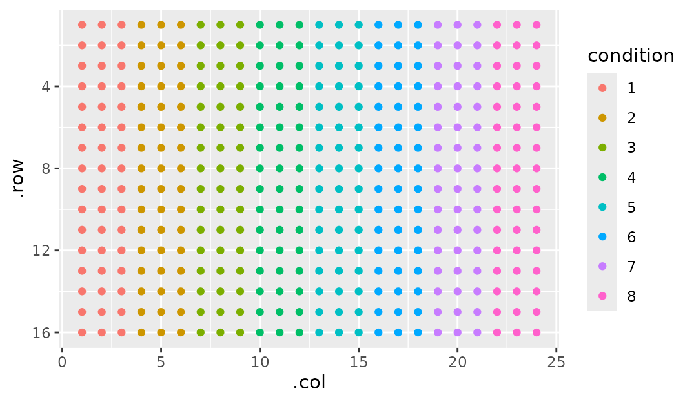
Note that we plot using condition. This implies that it’s part of my_plate$well_data, since I told you that’s where gp_plot gets its plotting data from, right? You would be correct. When you make a section, you tack on a column named whatever you named it to well_data. This is fundamental to the idea of ‘tidying as you plot’ (which, again, is gone over in the ‘Using gp to wrangle plate data’ vignette).
But there’s so much other cools stuff you can do with gp_sec. Let’s go over them in isolation.
Starting corner
Starting off gentle, we can describe which corner we want section one to be in by supplying a start_corner argument. By default, start_corner = "tl". tl stands for top-left, so I imagine you can guess what the other three options stand for: tr, bl, br
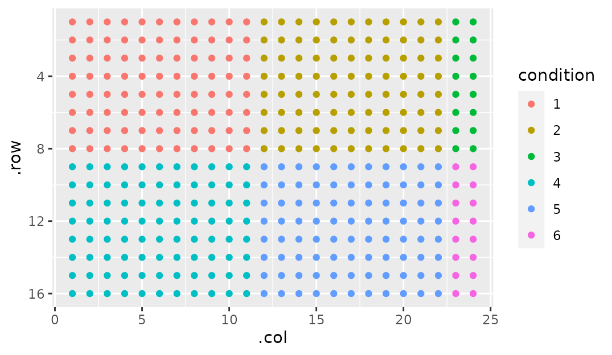
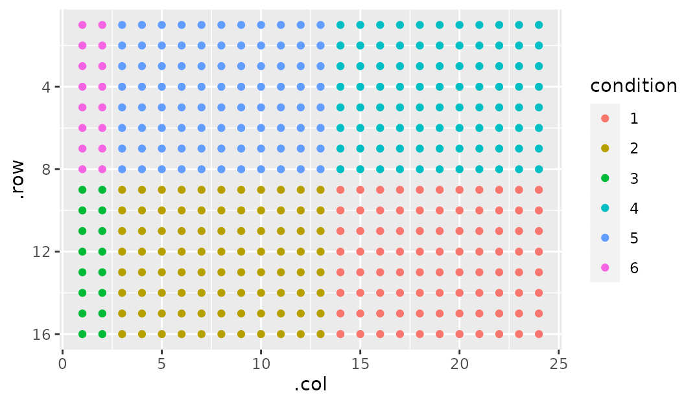
Flowing - left/right first or top/bottom first?
Notice that by default our next section is to the side of the section before it. But what if we wanted our next section to be above/below? This can be done simply by setting flow to either "row" or "col":
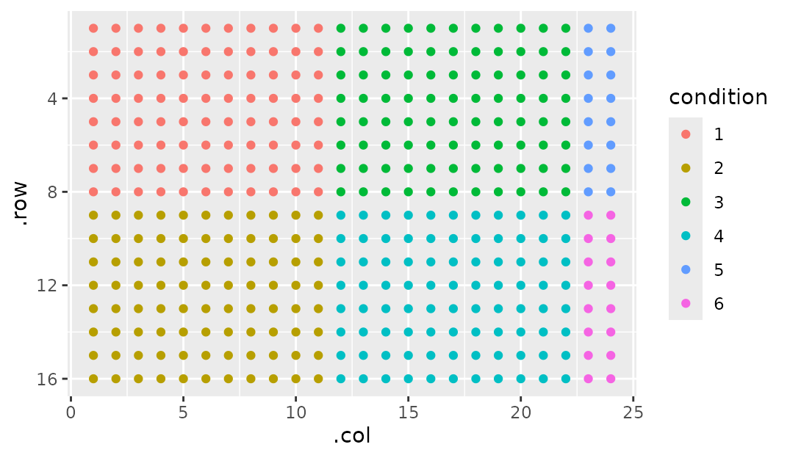
Margins
Sometimes it’s nice to have a bit of space around sections. As a practical example, I leave a blank space around the edge of my PCR plate to avoid edge effects (poor seal, uneven lighting, etc). So how would we implement this?
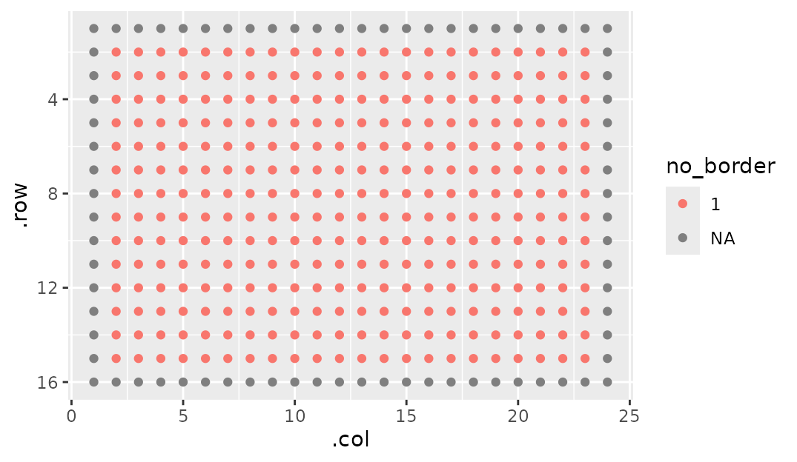
Note that you have to specify the dimensions here. If you think you could get away with just supplying a name and margin = 1, you’d be unfortunately mistaken. As I mentioned previously, ncol and nrow fill up to their parent section. Then, margin gets ADDED to it. This makes it overflow its parent (ie this is MARGIN not PADDING, for the HTML/CSS inclined).
Now I can use the fact that sections can have sections to, say, show where my primers will go:
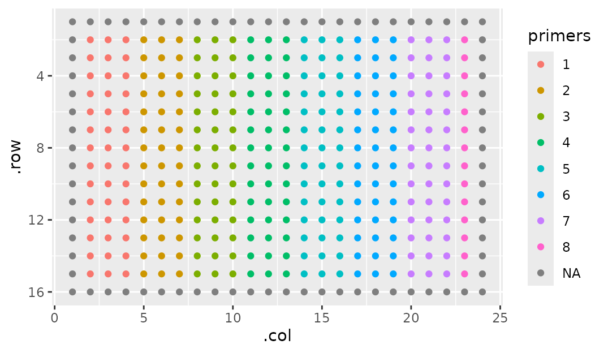
Margins can also be specified to be on a particular side by supplying a vector. This works very much how CSS margin specification goes.
- One number: Applies the margin to all four sides.
- Two numbers: First to the top and bottom, second to the sides.
- Three numbers: First to the top, second to the sides, third to the bottom
- Four numbers: Top, right, bottom, left
Breaking Sections
You’ll notice in the figure above that primer 8 isn’t a full section. We can omit those that might not be a full section by setting break_sections = FALSE:
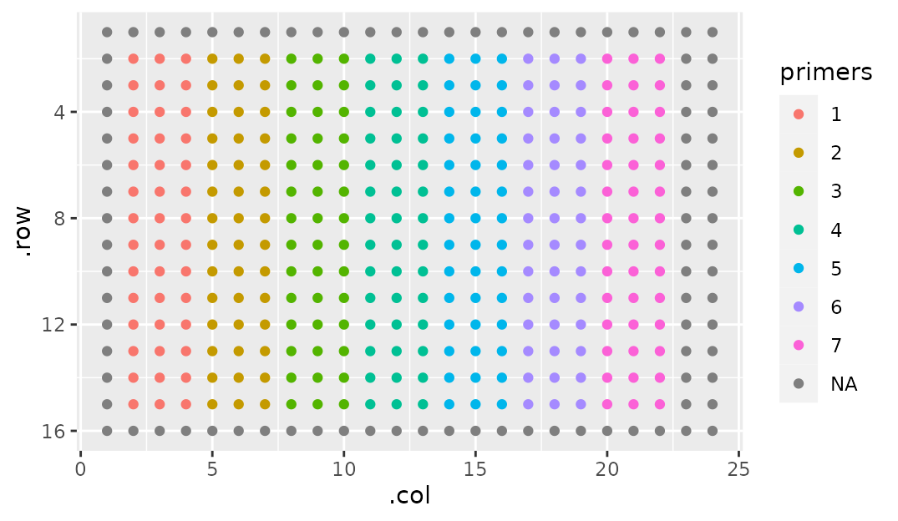
Wrapping - going over the edge
Sometimes you’ll want to wrap your sections so that when one clips off the edge, it starts right back up on the beginning of the next line. Like this:
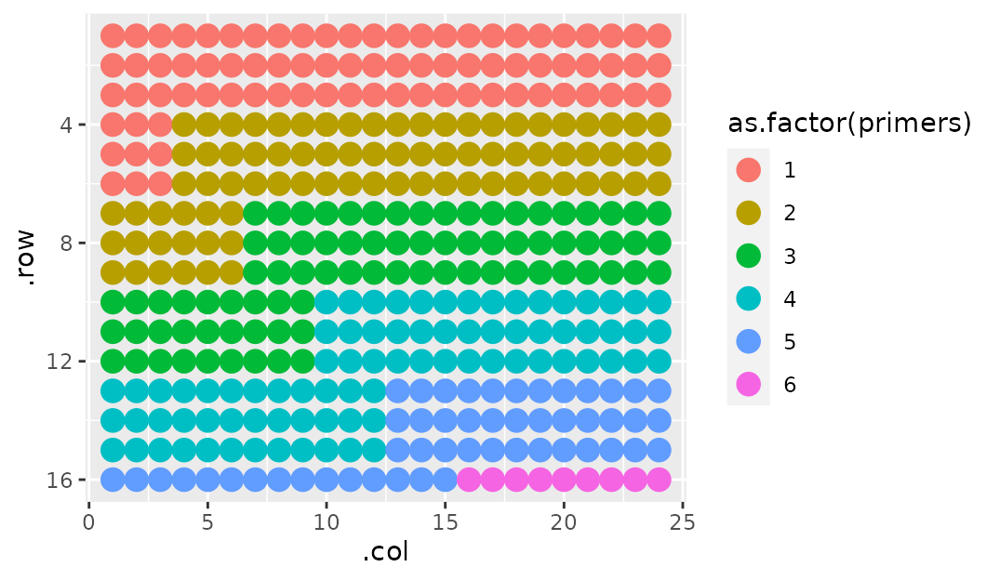
This makes sense in instances where the section is too big for the parent section. Without wrapping, you wouldn’t be able to fit a single full section on this plate.
Labeling
Labeling serves two purposes: Annotating the section numbers, and hiding sections you don’t use (it also has a third purpose, in that it helps tidying - but see the other vignette for that).
my_plate |>
gp_sec("primers", ncol = 3, nrow = 7, labels = c("GBP2", "YAP1", "GAPDH")) |>
gp_plot(primers)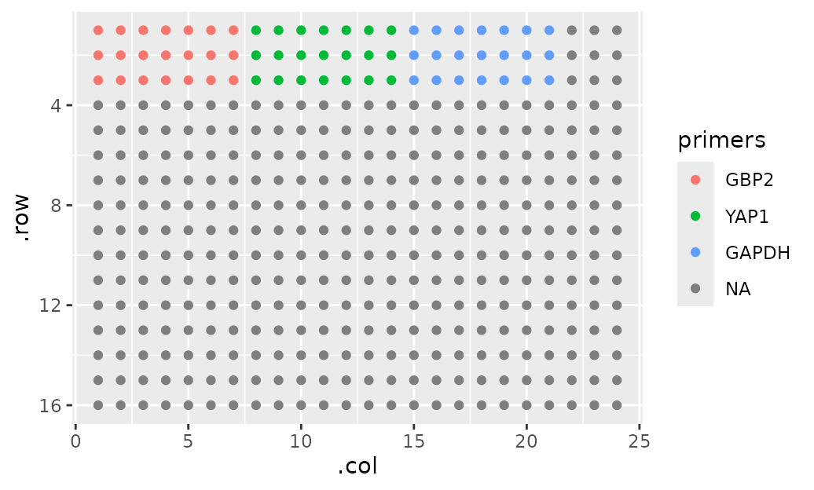
Putting it all together
You can make some wild stuff just by combining these arguments together. Like so:
gp(20, 20) |>
gp_sec("outer", 9, 7, margin = c(1, 0, 2, 1), start_corner = "br", wrap = TRUE, flow = "col") |>
gp_sec("inner", 2, 2, wrap = TRUE, start_corner = "tr", flow = "col") |>
gp_plot(as.factor(inner)) + ggplot2::theme(legend.position = "none")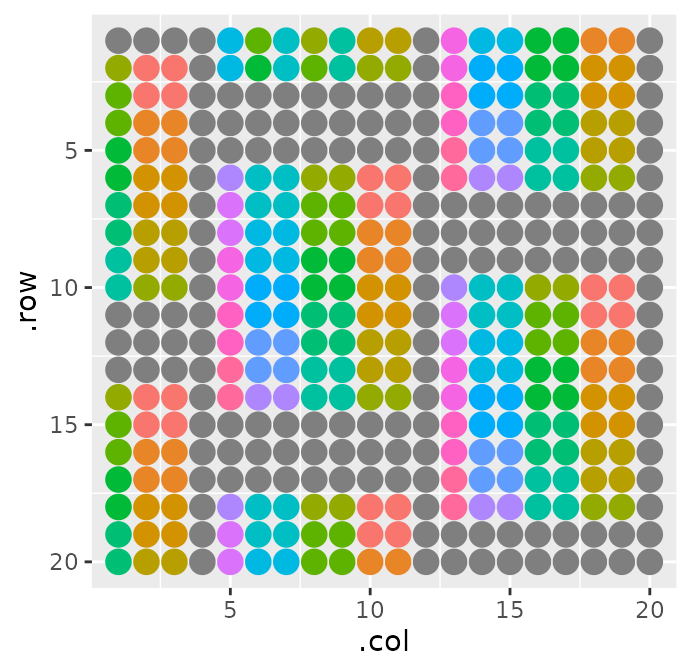